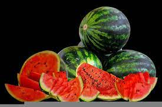

Watermelon

Watermelon is a flowering plant species of the Cucurbitaceae family and the name of its edible fruit.
It belongs to the cucumber and squash family. It is known for its refreshing taste and high water content, which
makes it a popular choice for hot summer days.
Watermelons are native to tropical and subtropical regions of Africa, and they have been cultivated for
thousands of years.
Today, they are grown in many parts of the world, including the United States, China, and Turkey.
Watermelons are low in calories and fat, but they are high in vitamins A, B6, and C, as well as antioxidants.
They are also a good source of hydration and can help keep the body hydrated during hot weather.
Watermelon is often eaten fresh, but it can also be used in salads, smoothies, and other dishes.
It can also be pickled, juiced, or even made into wine.